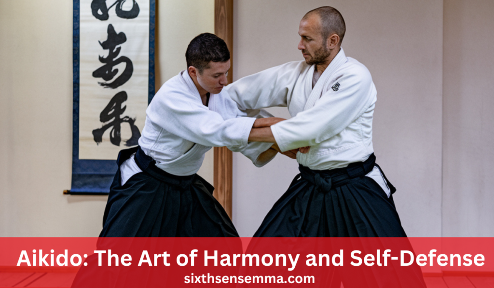
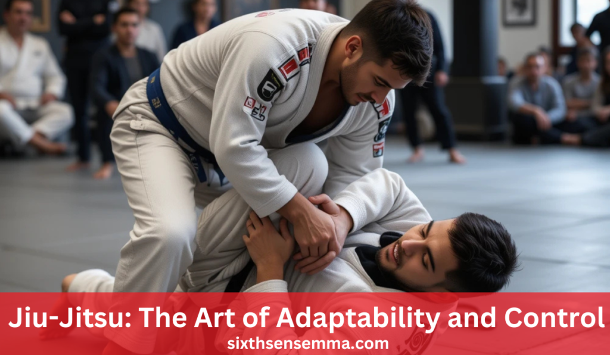
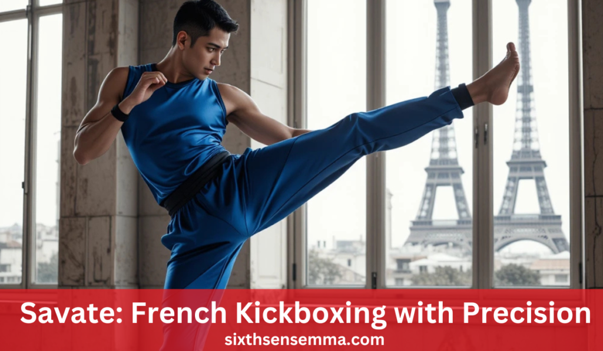

Different Types of Martial Arts: A Complete Guide

Different Types of Martial Arts have evolved over centuries, shaped by diverse cultures and traditions. Each style carries unique techniques, philosophies, and combat strategies. Understanding these variations helps in appreciating their historical significance and selecting the right discipline for personal development. From striking-based arts like Karate to grappling styles like Jiu-Jitsu, martial arts offer something for everyone. This guide aims to educate readers about the history, techniques, and philosophies behind these disciplines.
Which martial art is best for self-defense?
The best martial art for self-defense depends on individual preferences, but Krav Maga, Brazilian Jiu-Jitsu, and Muay Thai are among the most effective due to their practical techniques and real-world applications.
Important Takeaways
Historical Origins
Martial arts have been practiced for centuries, evolving through warfare, self-defense, and cultural traditions. Ancient civilizations such as China, Japan, India, and Greece developed unique combat systems influenced by their environment, military needs, and philosophical beliefs.
Core Principles
Each martial art is characterized by its basic techniques, training methods, and core ideology-because excitement and agility should be keys in this material application of strikes-like Taekwondo-and balance, leverage, and control would be concerned in arts based more on grappling-like Judo. While there are styles like Krav Maga that center around real-world self-defense and aggressiveness, classical arts like Tai Chi are geared more toward internal energy (Qi) and fluid movements for health and mindfulness.
Cultural Significance
Different Types of Martial Arts are more than just combat techniques; they are deeply connected to the cultures from which they emerged. They often carry spiritual and ethical teachings, such as the Bushido code in Japanese martial arts, which values honor, respect, and discipline. In China, martial arts are intertwined with Taoist and Buddhist philosophies, emphasizing harmony between mind and body.
Aikido: The Art of Harmony and Self-Defense
Developed by Morihei Ueshiba in the early 20th century, Aikido incorporates fluid movements, redirection of force, and precise techniques to neutralize attacks without causing unnecessary harm.
Methods.
Practitioners of Aikido, otherwise known as Aikidokas, use a variety of methods to change the direction of an attacker’s energy force, rather than meet it in direct confrontation. Some of these methods are:
Joint Locks (Kansetsu-Waza): Control and subdue opponents through manipulation of the joints; strong leverages particularly on the wrists and elbows.
Throws (Nage-Waza): Readjustment of an opponent’s energy is performed to further imbalance him and serve to throw him off with control.
Pins (Osae-Waza): Secure an opponent onto the ground using pressure and leverage to stop opponents from attacking.
Aikido at a Glance
| Aspect | Details |
|---|---|
| Origin | Japan, developed by Morihei Ueshiba in the early 20th century |
| Key Techniques | Joint locks, throws, pins, circular movements |
| Focus | Redirecting force, controlling opponents without harm |
| Philosophy | Harmony, self-defense, peaceful conflict resolution |
| Training Methods | Partner drills, kata (pre-arranged forms), weapons training (bokken, jo, tanto) |
| Competitive Aspect | Non-competitive; focuses on self-development |
| Modern Application | Used in self-defense, law enforcement, and personal growth |
Aikido remains a powerful martial art for those seeking self-defense without aggression, emphasizing balance, control, and a deep connection between mind and body.
Hapkido: The Art of Fluid Combat and Self-Defense
Hapkido is a dynamic Korean martial art that integrates striking, joint locks, throws, and weapons training. Developed in the mid-20th century, it blends elements of traditional Korean, Chinese, and Japanese Different Types of Martial Arts making it one of the most comprehensive self-defense systems
Techniques
Hapkido is eclectic and versatile and offers a variety of techniques to enable the practitioner to defend against many varied attacks efficaciously. This includes:
Joint Locks (Gwonbeop): Hapkido uses over a dozen wrist, elbow, and shoulder locks capable of immobilizing an opponent.
Dynamic Kicks (Chagi): The kicks are powerful yet fluid, including spinning, jumping, and low kicks, straining streisand.
Punches & Strikes (Jireugi & Chigi): The practitioners utilize hand strikes of great precision, including open-hand techniques and pressure point attacks.
Kung Fu: The Timeless Art of Strength, Fluidity, and Spiritual Growth
Kung Fu, one of the oldest and most diverse Different Types of Martial Arts systems, originates from ancient China and encompasses hundreds of styles, each with its unique techniques, philosophies, and combat strategies. Unlike martial arts that focus solely on physical power, Kung Fu integrates the mind, body, and spirit, fostering discipline, adaptability, and internal energy (Qi).
Techniques
Kung Fu is an extensive martial art system that includes a wide range of techniques, varying from one style to another. The core techniques include:
Striking (Da) – Kung Fu incorporates powerful punches, palm strikes, elbow strikes, and finger thrusts to target vital points with precision.
Kicking (Ti) – Styles like Northern Shaolin emphasize high, acrobatic kicks, while Southern styles favor low, grounded kicks for stability and power.
Joint Locks & Grappling (Qinna) – Techniques that manipulate an opponent’s joints to control, restrain, or disable them.
Throws & Sweeps (Shuai Jiao) – Traditional Chinese wrestling techniques used to off-balance and defeat opponents in close combat.
Kung Fu at a Glance
| Aspect | Details |
|---|---|
| Origin | Ancient China, developed over thousands of years |
| Key Techniques | Strikes, kicks, joint locks, throws, weapons training |
| Focus | Fluid movements, adaptability, cultivation of internal energy (Qi) |
| Philosophy | Physical and spiritual development, discipline, balance, harmony |
| Training Methods | Forms (Kata), meditation, partner drills, weapons training |
| Competitive Aspect | Forms competitions, full-contact sparring (Sanshou/Sanda) |
| Modern Application | Self-defense, performance arts, meditation, physical conditioning |
Kung Fu remains one of the most revered Different Types of Martial Arts embodying a perfect blend of combat effectiveness, artistic expression, and spiritual enlightenment.
Karate: The Way of the Empty Hand
Karate is a striking-based martial art that originated in Okinawa, Japan, and has since spread worldwide as one of the most practiced martial disciplines. Rooted in traditional Okinawan fighting techniques and influenced by Chinese Different Types of Martial Arts, Karate emphasizes powerful strikes, precise movements, and a deep philosophical foundation.
Techniques
Karate techniques are designed for efficiency, speed, and power. They involve a combination of strikes, blocks, and counterattacks, focusing on maximum impact with minimal effort.
Punching (Tsuki): Karate incorporates a variety of punches, such as the straight punch (Choku Tsuki), reverse punch (Gyaku Tsuki), and vertical punch (Tate Tsuki). These strikes are delivered with precision, targeting vital points.
Kicking (Geri): Kicks are executed with speed and power, ranging from basic front kicks (Mae Geri) to advanced spinning and jumping kicks (Ushiro Geri, Tobi Geri). Different Types of Martial Artsstyles emphasize various kicking techniques—Shotokan focuses on long-range kicks, while Goju-Ryu emphasizes close-range kicks.
Knee & Elbow Strikes (Hiza Ate & Empi Uchi): Close-range combat techniques include devastating knee strikes to the ribs or abdomen and elbow strikes aimed at the head or torso.
Open-Hand Techniques (Teisho & Shuto Uchi): Karate utilizes palm strikes (Teisho), knife-hand strikes (Shuto Uchi), and spear-hand thrusts (Nukite) for effective counterattacks.
Krav Maga: The Art of Survival in Combat
Krav Maga is a modern martial art developed by the Israeli military for self-defense and combat training. Unlike traditional Different Types of Martial Arts, Krav Maga focuses on practical techniques designed to neutralize threats quickly and efficiently, especially in real-world scenarios.
Techniques
Striking: Krav Maga incorporates a wide range of striking techniques, including punches, elbow strikes, knee strikes, and kicks. The strikes are designed to target vital areas such as the groin, throat, eyes, and knees, causing maximum damage with minimal effort.
Grappling & Clinch Fighting: Krav Maga teaches techniques for controlling an opponent in close-range situations, such as clinches and holds. These techniques often include knee strikes to vulnerable areas and escaping from holds.
Disarming: One of Krav Maga’s primary focuses is disarming opponents wielding weapons like knives, guns, or sticks. Through techniques that leverage the opponent’s body mechanics, practitioners learn to neutralize weapon threats with speed and precision.
Defensive Techniques: Krav Maga includes practical defense strategies against common attacks like grabs, chokes, and punches. It emphasizes defending oneself while simultaneously attacking or escaping the threat.
At a Glance
| Aspect | Jiu-Jitsu (Jujutsu) | Krav Maga |
|---|---|---|
| Origin | Japan (for Jujutsu); Brazil (for BJJ) | Israel (military-based) |
| Key Techniques | Pins, joint locks, throws, submissions, sweeps | Striking, grappling, disarming, defensive techniques |
| Focus | Leverage, flexibility, ground control | Efficiency, survival, real-world scenarios |
| Philosophy | Use of opponent’s energy, adaptability, mental control | Speed, aggression, practical self-defense |
| Training Methods | Sparring, rolling, drills, kata | Simulations, drills, real-life scenario practice |
| Modern Application | Self-defense, sport grappling (BJJ), law enforcement | Self-defense, military training, law enforcement |
Both Jiu-Jitsu and Krav Maga offer unique approaches to self-defense and combat training. Jiu-Jitsu is deeply rooted in the principles of leverage and control, particularly in ground combat, while Krav Maga is designed for real-world scenarios, prioritizing speed, aggression, and survival.
Jiu-Jitsu (Jujutsu): The Art of Adaptability and Control

Jiu-Jitsu, often referred to as Jujutsu, originated in Japan as a method of hand-to-hand combat for samurai in battle. Its focus is on using an opponent’s force and movements against them, making it an ideal martial art for smaller or weaker individuals. Over time, Jiu-Jitsu has evolved, with Brazilian Jiu-Jitsu (BJJ) emerging as a popular variant.
Techniques
Pins (Osae Komi): Jiu-Jitsu employs various pinning techniques to immobilize an opponent, usually by controlling their torso or limbs. These pins are used to gain dominance, limit an opponent’s mobility, and force a submission.
Joint Locks (Kansetsu Waza): Joint locks manipulate an opponent’s joints, such as the elbow, wrist, or shoulder, to restrict movement or force them into submission. Locks are key tools for controlling an opponent without relying on brute strength.
Throws & Takedowns (Nage Waza): Jiu-Jitsu utilizes throws and takedowns, similar to Judo, to bring an opponent to the ground, where they can be controlled more easily. Techniques like the hip toss and ankle pick are commonly employed.
Kendo: The Way of the Sword
Kendo, literally meaning “the way of the sword,” is a modern Japanese martial art that focuses on the techniques and philosophy of traditional swordsmanship. Practitioners wield bamboo swords (Shinai) and wear protective armor (Bogu) while training in combat techniques.
Techniques
Strikes (Men, Kote, Do, and Tsuki): Kendo involves precise strikes to four primary target areas: the head (Men), wrists (Kote), torso (Do), and throat (Tsuki). Each strike must be performed with a combination of power, speed, and precision.
Thrusting (Tsuki): Tsuki refers to the thrust to the throat, requiring accurate targeting and timing to execute successfully. It is one of the most advanced techniques in Kendo.
Footwork (Ashi-Sabaki): Footwork is a fundamental aspect of Kendo. Practitioners use various steps, such as the okuri-ashi (sliding step) and fumikomi (stamping step), to move in and out of range quickly while maintaining balance and posture.
Kickboxing: Combining Striking and Fitness
Kickboxing is a hybrid martial art that blends traditional boxing techniques with powerful kicking and knee strikes, drawing influence from Karate, Muay Thai, and other Different Types of Martial Arts. It is widely practiced both as a competitive sport and as a fitness regimen, with an emphasis on improving physical conditioning, cardiovascular health, and self-defense skills.
Techniques
Punching: Kickboxing incorporates all standard boxing punches—straight punches (Jab), cross punches (Cross), uppercuts, and hooks. The emphasis is on speed, precision, and effective combinations.
Kicking: Various kicks are used, including roundhouse kicks, front kicks, side kicks, and low kicks. Kicking techniques focus on fluidity and balance to generate power while maintaining defensive readiness.
Knee Strikes: Knee strikes are used in close-range combat, often targeting the opponent’s midsection or head. These strikes are particularly effective in clinch situations.
Muay Thai: The Art of Eight Limbs
It is widely considered one of the most effective stand-up fighting systems, with a strong emphasis on conditioning, power, and versatility in close-range combat.
Techniques
Strikes with Fists, Elbows, Knees, and Shins: Muay Thai fighters utilize the fists for powerful punches, elbows for devastating close-range strikes, knees for clinch attacks, and shins for powerful low and high kicks.
Clinch Fighting: The clinch is a unique aspect of Muay Thai, where fighters engage in close-range combat, controlling their opponent’s posture while delivering knee strikes.
Kicks: Muay Thai uses a variety of kicking techniques, including the roundhouse kick (Teep), which can target the head, body, or legs, and the devastating low kick that aims at an opponent’s thigh or calf.
Sambo: Russian Combat Sport and Self-Defense
Sambo is a Soviet-developed martial art that integrates elements of judo, wrestling, and other combat systems. It focuses on throws, joint locks, and submissions, with a heavy emphasis on adaptability in various combat situations.
Techniques
- Throws: Sambo practitioners learn a variety of throws and takedowns, many of which are inspired by Judo.
- Joint Locks and Submissions: Joint locks, particularly to the knee, ankle, and elbow, are core techniques in Sambo.
- Ground Fighting: Sambo practitioners are trained in ground combat, utilizing both submissions and positional control.
Savate: French Kickboxing with Precision and Agility

It originated in France in the 19th century and was designed for self-defense, military training, and later, competition. Savate emphasizes precision, speed, and agility, with a unique focus on a wide range of kicks delivered with exceptional control.
Techniques
Kicks: Savate incorporates a variety of kicks, including the Chasse (front kick), Fouetté (roundhouse kick), Coup de pied bas (low kick), and Savate kick (a sweeping kick).
Punching: Savate also includes boxing techniques, such as jabs, crosses, hooks, and uppercuts. Punches are often combined with kicking techniques to create fluid, powerful combinations.
Footwork: Footwork is key in Savate, and practitioners focus on agile movement and positioning. Quick steps and pivots allow the fighter to remain elusive while setting up attacks.
Defensive Techniques: Savate places a strong emphasis on defensive maneuvers, including head movement, blocking, and evading attacks.
Conclusion: The Vast World of Martial Arts
Different Types of Martial Arts represent not only a wide variety of physical techniques but also distinct philosophies, principles, and histories that shape the way each style approaches combat, self-defense, and personal growth. Whether it’s the powerful, close-range strikes of Muay Thai, the adaptability and practical applications of Sambo, or the precision and fluid movements of Savate, each discipline offers a unique path for practitioners to follow.
FAQ's
The best martial art for beginners depends on personal goals and preferences. Brazilian Jiu-Jitsu (BJJ) is favored for its focus on technique, making it accessible for all. Karate is also a strong choice, emphasizing basic movements and self-discipline. It’s beneficial for beginners to try different classes to find what suits them best.
There is no age limit for starting martial arts! People of all ages can benefit from training. Many schools offer adult classes that cater to newcomers, allowing them to learn at their own pace and enjoy the physical and mental benefits of martial arts.
The cost of martial arts training varies by school, location, and class types. Many schools offer flexible pricing, including monthly memberships or per-class fees. It’s wise to explore different options to find a budget-friendly school that meets your needs.
Participation costs typically range from $100 to $150 per month for memberships, with per-class rates between $15 and $30. Annual memberships may be available for $800 to $1,200, often providing savings. Additionally, consider any extra fees for uniforms and equipment.
For your first day, wear comfortable athletic clothing. Most schools will provide a uniform (like a gi) for you to wear once you enroll, but you want to be ready to move in whatever you choose! Just check with the school beforehand to see if they have any specific requirements.
The time it takes to earn a belt varies widely based on the martial art and your dedication. Generally, it can range from 3 months to several years. Factors influencing this timeline include attendance, effort, and the specific belt progression system of the style you are learning.
Absolutely! Martial arts classes are intended for all fitness levels. Many schools offer beginner programs that help you gradually build your strength and flexibility, so don’t worry if you’re starting from scratch!
Train with us in Coppell
The first class is free. Shorts, a t-shirt and a water bottle. We lend the rest.
Book a free class